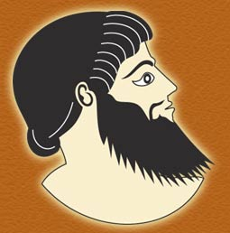

|
Herakles’s
vision
When Herakles was a young man, he had a vision. He was offered the choice of a life of ease, pleasure, and vice, or one of hardship, danger, glory, and virtue. He chose a virtuous life, though it promised more difficulties.
The Twelve Labors
The jealous
wife of Zeus, Hera, cursed Herakles with a fit of madness, during which he killed
his wife and their children. Stricken with shame and guilt, Herakles begged
the Oracle at Delphi to tell
him how to purify himself of these vile deeds. The oracle revealed that Herakles
had to serve King Eurystheus of Tiryns for 12 years. This king ordered Herakles
to complete 12 nearly impossible feats. 
- The First Labor:
Herakles killed the fierce lion of Nemea, whose skin he then wore as a trophy.
- The Second Labor:
With the help of his nephew Iolaus, Herakles slew the deadly Hydra of Lerna.
This serpent had several heads that grew back as soon as they were cut off.
A huge crab helped the serpent defend itself.
- The Third Labor:
Herakles captured the Erymanthian boar, a huge, destructive boar.
- The Fourth Labor:
Herakles captured the Cerynean stag, a deer with golden horns and bronze hooves.
- The Fifth Labor:
Herakles drove the Stymphalian birds, a flock of ferocious, man-eating birds,
away from the woods near Lake Stymphalus.
- The Sixth Labor:
Herakles cleaned the unimaginably foul stables of King Augeas, who owned thousands
of cattle and other animals, by changing the course of two rivers so that
they flowed through the building and swept away the filth.
- The Seventh Labor:
Traveling to the island of Crete, he captured the bull of King Minos. This
bull was the father of the Minotaur.
- The Eighth Labor:
Herakles brought the horses of King Diomedes of Thrace
to King Eurystheus. Although these horses feasted on human flesh, Herakles
tamed them by feeding them Diomedes.
- The Ninth Labor:
Herakles obtained the girdle
of Hippolyta, the queen of the Amazons, by defeating her in battle. Hippolyta
had received this leather belt from Ares, the god of war, because of her great
courage and skill in battle.
- The Tenth Labor:
Herakles captured the cattle of the fearful monster
Geryon, who had three united bodies, three heads, and three legs. On his journey,
Herakles created two mountains that became known as the Pillars
of Herakles.
- The Eleventh Labor:
Herakles stole the Golden Apples of the Hesperides
from the Tree of Life. These apples had been given to Zeus and Hera by Gaea
as a wedding present.
- The Twelfth Labor:
He descended to the world of the dead, captured the three-headed watchdog, Cerberus, and brought him back to the upper world.
The death of Herakles
After completing his 12 labors, Herakles married the princess Deianira. When the centaur Nessus attacked Deianira, Herakles shot him with a poisoned arrow. The dying centaur told Deianira to smear some of his blood on Herakles's robe to use in case she ever needed to win back her husband’s love.
After Herakles fell in love with another princess, Deianira followed Nessus's
advice. But the centaur's blood had been poisoned by Herakles's arrow. When
Herakles put on the robe, it burned him so terribly he pleaded to be placed
on a funeral pyre.
After his body was consumed by flames, he was taken to Mount Olympus, home of
the gods.
|